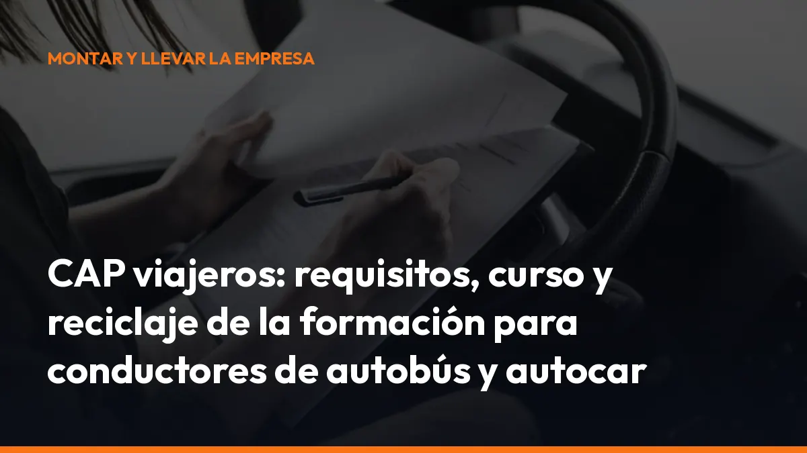

CAP viajeros: requisitos, curso y reciclaje de la formación para conductores de autobús y autocar

En esta guía encontrarás los requisitos del CAP viajeros, las diferencias entre el curso inicial y el reciclaje, la duración de la formación continua y las novedades introducidas por el Real Decreto 487/ 2026.
Información actualizada: el Real Decreto 487/2026 se publicó en el BOE el 18 de junio de 2026 y entró en vigor el 18 de septiembre de 2026, tres meses después de su publicación.
¿Qué es el CAP viajeros?
El CAP viajeros es el Certificado de Aptitud Profesional que acredita que tienes la formación necesaria para conducir vehículos destinados al transporte profesional de pasajeros.
Es obligatorio para los conductores que realizan transporte por carretera con vehículos que requieren alguno de estos permisos:
- D1 o D1+E.
- D o D+E.
- Permisos equivalentes reconocidos por la normativa.
El permiso de conducir te autoriza a manejar el vehículo. El CAP acredita que puedes utilizarlo profesionalmente para transportar viajeros. Sin el CAP en vigor, no puedes realizar legalmente determinados servicios de transporte público o privado complementario de pasajeros. Además, la empresa puede enfrentarse a sanciones si te asigna un servicio sin la cualificación correspondiente.
Comprueba hoy la fecha de caducidad de tu tarjeta CAP y evita problemas en carretera.
Requisitos para obtener el CAP de viajeros
Los requisitos dependen de si vas a obtener el certificado por primera vez o si necesitas renovarlo mediante formación continua.
Para realizar el curso CAP viajeros inicial
Para obtener el CAP inicial debes:
- Disponer de la edad exigida para la modalidad y el permiso correspondiente.
- Realizar un curso en una empresa CAP autorizada.
- Completar la formación obligatoria.
- Superar el examen oficial.
- Tener el permiso de conducción necesario para comenzar a trabajar como conductor de viajeros.
El curso inicial puede realizarse en dos modalidades:
- Formación ordinaria: 280 horas y examen.
- Formación acelerada: 140 horas y examen.
La formación ordinaria es más extensa. La modalidad acelerada permite obtener la cualificación en menos tiempo, siempre que cumplas las condiciones de edad y permiso establecidas para conducir autobuses o autocares.
Para realizar el reciclaje CAP viajeros
Si ya tienes el CAP inicial, debes realizar un curso de formación continua de 35 horas cada cinco años.
Para acceder al reciclaje necesitas:
- Ser titular del CAP inicial o estar incluido en un supuesto de exención de la cualificación inicial.
- Tener un permiso de conducción de las categorías D1, D1+E, D o D+E en vigor.
- Matricularte en un centro CAP autorizado.
- Completar las 35 horas de formación.
- Cumplir los controles de asistencia establecidos.
No necesitas superar un examen final para renovar el CAP mediante formación continua. El centro comunica la finalización del curso a la administración y se actualiza la cualificación correspondiente.
CAP inicial y reciclaje CAP: diferencias principales
No confundas ambos trámites. El CAP inicial te permite obtener por primera vez la cualificación profesional. El reciclaje CAP viajeros mantiene actualizados tus conocimientos y prolonga la validez de tu tarjeta.
CAP inicial Formación continua o reciclaje
Se realiza antes de comenzar profesionalmente Se realiza cada cinco años
Dura 280 o 140 horas Dura 35 horas
Incluye examen oficial No incluye examen final ordinario
Permite obtener la cualificación inicial Renueva la cualificación
Incluye formación general y específica de viajeros Actualiza seguridad, tecnología y normativa
La tarjeta CAP tiene una vigencia de cinco años. No esperes a que caduque. Programa el reciclaje con antelación para evitar quedarte sin poder trabajar.
¿Qué contenidos incluye la formación CAP viajeros?
La formación está orientada a situaciones reales de la conducción profesional de autobuses y autocares.
Entre los contenidos principales se incluyen:
- Conducción segura: control del vehículo, frenado, anticipación y evaluación de riesgos.
- Seguridad y comodidad: suavidad de movimientos, colocación en la calzada y conducción adaptada a los pasajeros.
- Normativa de transporte: obligaciones del conductor, documentación y reglas aplicables al transporte de viajeros.
- Tacógrafo: tiempos de conducción, descansos, uso correcto y prevención de manipulaciones.
- Emergencias: actuación ante accidentes, incendios, evacuaciones y situaciones de riesgo.
- Atención al pasajero: comunicación, información y gestión de incidencias.
- Accesibilidad: atención a viajeros con discapacidad y derechos de los pasajeros.
- Conducción eficiente: consumo de combustible, nuevas tecnologías y sistemas de ayuda a la conducción.
- Salud y seguridad laboral: fatiga, estrés, alimentación, medicamentos y aptitud física y mental.
- Imagen profesional: comportamiento del conductor y calidad del servicio.
La finalidad es práctica: que puedas conducir con seguridad, responder correctamente ante una emergencia y ofrecer un servicio profesional a cada pasajero.
Novedades del Real Decreto 487/2026
El Real Decreto 487/2026 modifica el sistema de cualificación inicial y formación continua de los conductores profesionales.
Aula virtual para parte de la formación
La nueva regulación permite utilizar un aula virtual para determinados contenidos teóricos, siempre que el centro cumpla los requisitos técnicos y administrativos.
La plataforma debe garantizar:
- Conexión sincronizada entre profesor y alumnos.
- Comunicación bidireccional en tiempo real.
- Cámara conectada durante la sesión.
- Registro de entradas, salidas y tiempo de conexión.
- Acceso de los servicios de inspección a las clases.
- Conservación de los registros durante dos años.
La formación virtual no significa que el curso sea completamente online. Las prácticas de conducción, los contenidos prácticos y los exámenes iniciales deben realizarse de forma presencial cuando la normativa lo exige.
Antes de matricularte, confirma con el centro qué módulos puedes realizar mediante aula virtual y cuáles requieren asistencia física.
Supresión de los sistemas biométricos obligatorios
Desde la entrada en vigor del nuevo real decreto, deja de ser obligatorio utilizar sistemas biométricos como la huella dactilar o el reconocimiento facial para controlar la asistencia.
Los centros pueden utilizar:
- Hojas de firmas.
- Registros digitales.
- Otros mecanismos fiables de identificación y participación.
Estos sistemas deben respetar los principios de licitud, necesidad y minimización de datos personales. El objetivo es controlar la asistencia sin recopilar más información de la necesaria.
Actualización de contenidos
El Real Decreto también actualiza el programa formativo para adaptarlo a la evolución tecnológica, normativa y profesional del transporte.
En el caso del CAP viajeros, se refuerzan especialmente:
- La seguridad de los pasajeros.
- La atención a personas con discapacidad.
- La conducción eficiente.
- La anticipación de riesgos.
- La actuación ante emergencias.
- El uso de tecnologías de seguridad.
- La atención y comunicación con los viajeros.
- La normativa europea del transporte por carretera.
La formación deja de centrarse únicamente en aprobar o renovar una tarjeta. Debe ayudarte a resolver mejor las situaciones que encuentras en cada ruta.
¿Cada cuánto tienes que renovar el CAP viajeros?
Debes realizar 35 horas de formación continua cada cinco años.
También puedes realizar el curso en periodos discontinuos, siempre que:
- Lo organice la misma empresa CAP autorizada.
- Se complete dentro del mismo año natural.
- Cada bloque tenga al menos 7 horas.
- Se respeten los controles de asistencia.
- Se completen las 35 horas exigidas.
La nueva tarjeta mantiene una validez de cinco años. Comprueba la fecha que aparece en tu tarjeta o en el registro correspondiente y no esperes al último momento.
Si has dejado de trabajar como conductor y tu tarjeta ya no está en vigor, normalmente tendrás que realizar la formación continua antes de volver a ejercer.
¿Qué ocurre si conduces con el CAP caducado?
Conducir un vehículo de transporte profesional sin el CAP o la tarjeta de cualificación en vigor puede constituir una infracción grave. La responsabilidad puede afectar al conductor y a la empresa de transporte.
Las consecuencias pueden incluir:
- Sanción económica.
- Problemas durante una inspección.
- Paralización del servicio.
- Responsabilidad de la empresa.
- Pérdida de tiempo y costes de sustitución.
- Imposibilidad de continuar legalmente la ruta.
No arriesgues un servicio completo por no revisar una fecha. Renueva tu CAP antes de que caduque y conserva la documentación acreditativa.
Checklist rápido antes de matricularte
Antes de apuntarte a un curso CAP viajeros, comprueba:
- Centro autorizado: confirma que la empresa está habilitada para impartir formación CAP.
- Modalidad: pregunta qué parte es presencial y qué parte se realiza en aula virtual.
- Duración: verifica que el reciclaje incluye las 35 horas reglamentarias.
- Permiso: ten preparado tu permiso D1, D1+E, D o D+E.
- Documentación: presenta DNI o NIE, permiso de conducir y tarjeta CAP anterior.
- Asistencia: consulta cómo se registran las horas.
- Fecha: termina el curso antes de que caduque tu cualificación.
- Registro: solicita confirmación de que el centro comunica el curso a la administración.
Preguntas frecuentes sobre el CAP viajeros
¿Puedo hacer el reciclaje CAP viajeros completamente online?
No debes dar por hecho que sea un curso 100 % online. El aula virtual puede utilizarse para determinados contenidos teóricos si el centro y el curso cumplen la normativa. Las prácticas y otros contenidos deben realizarse presencialmente cuando así se exige.
¿Cuántas horas dura el reciclaje CAP viajeros?
La formación continua dura 35 horas y debe realizarse cada cinco años.
¿Hay que hacer un examen para renovar el CAP?
El reciclaje CAP ordinario no incluye un examen final como el CAP inicial. Debes completar la formación y cumplir los controles de asistencia.
¿Qué permisos necesito para el CAP de viajeros?
Los permisos habituales son D1, D1+E, D o D+E, según el tipo de autobús o autocar que conduzcas.
¿Qué norma regula actualmente el CAP?
La regulación principal se encuentra en el Real Decreto 284/2021, modificado por el Real Decreto 487/2026.
Mantén tu formación y tu documentación bajo control
El CAP viajeros es obligatorio, pero renovarlo no tiene por qué convertirse en un problema. Revisa tus fechas, elige un centro autorizado y completa el reciclaje con tiempo suficiente.
En Mi Carga te ayudamos a mantener la documentación de tu actividad de transporte organizada y disponible desde el móvil. Así puedes consultar tus documentos cuando los necesitas, desde la cabina, la empresa o cualquier punto de la ruta.
Empieza hoy por lo más importante: comprueba la caducidad de tu CAP viajeros.
Activa tu cuenta en Mi Carga por 10 €/mes + IVA o 90 €/año + IVA, sin permanencia y con 10 portes de prueba. Si gestionas varios conductores, solicita un presupuesto para tu empresa.
Para resolver tus dudas directamente, escríbenos por WhatsApp. ¿Hablamos?
Genera tus 10 primeros documentos gratis con Mi Carga
DeCA, carta de porte y ADR, en PDF, con QR y archivo automático en la nube.
Empezar con 10 documentos gratisArtículo informativo. Consulta siempre el caso concreto de tu operación. ¿Dudas? Escríbenos.